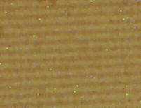
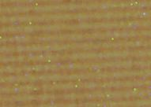

<pre>
12/3/99 12:30-5:30pm
TPX substrate pressed.  2.5" diam, ~1mm thick.
Sputter Ti/Au

Copy mask.  Made by Photronics.  2 micron lines on 4 micron pitch.
Use Nanofilm blank.  Expose 5s at 26mW.  Masks stuck together.  Exposure looks
ok.  
Develop in Tetramethylammoniumhydrohide (TMAH) for 30s, rinse for 60s @3000rpm.  
Etch in Cr7 for 1:12.  NOTE that the lines look larwider than the spaces.)
Remove resist with ACT for 0:40+.
INSPECT MASTER MASK:  Found one defect located at (lines left to right) horizontal center and one quarter distance from vertical edge.  Defect size ~20um.
The defect appears on the copy indicating that the defect is original to the master, not due to the sticking mentioned earlier.
Another copy of master mask.  
UV lens moved into proper position.
Use nanofilm blank.  Expose 6s at 26mW.  Masks stuck again.  Same diffraction rings appeared near one edge.
Develop same as before.
Etch in Cr7 for 1:12.
Inpsection:  lines are twice as wide as the spaces in most regions.  In the diffraction ring region, the lines are half as wide as the spaces but still continuous.
Another copy of master mask.
Use nanofilm blank.  Expose for 8s at 26mW.  Masks stuck. 
Develop same as before.
Etch in Cr7 for 1:12.
remove resist.
Inspection:  Looks more uniform by eye.  Lines are slightly thinner than spaces
under microscope as shown below (first in the center of the mask,then
in the lighter region near one edge): 



12/6/99 11:30 start.

Ti/Au on second substrate.
The Au layer started peeling within a few minutes around the outer rim.
Shipley1813 microposit resist spun at 4000 rpm for 60s.
Use mask1 copy (lines are twice as thick as spaces). <mask for 1st sample>
Expose for 6s at 26mW.  Substrate moved closer to mask by 300um (2 turns) from focused position.  Mask did not stick.
Developed with TMAH for 60s then rinse with water for 60s at 400rpm then dry for 60s at 4000rpm.
Inspection: No pattern visible near wrinkled peeloff regions due to lost contact. <sample1 (unbaked) PR w/peeloff>
Remove resist and spin resist again.  Baked at 120deg for 10min.
Expose for 6s at 26mW.
Develop as before.
Inspection:  Lines slighly wider than spaces.
Etch in HF 10% in H2O for ~10s with minimal effect.  Still blotchy patches where the gold has flaked off.  This non-gold region was still conductive (~100kOhms). 

Au only on 3rd substrate.
Deposited layer looks good.
Expose for 7.25s. 
After developing, strong diffraction rings are visible.  Under microscope, big regions without lines.  Surface looks very rough, big clumps of stuff.
Etch indicates that the regions without lines were underexposed.

Ti/Au on 2nd substrate.
Deposited layer looks good.
Expose for 6.5s.
Same problem as with the 3rd substrate.

</pre>
